.png) Portfólio de Matemática
Portfólio de Matemática
➟ Seja bem vindo ao meu portfólio de matemática!
A matemática é a minha matéria favorita desde sempre, no entanto, tive
algumas limitações para entender certos conteúdos com esta nova
modalidade de ensino à distância. Percebo que a matemática é uma
disciplina fundamental e necessita da presença física do professor e do
estudante para obter melhores resultados acadêmicos. Apresento nesse
trabalho as minhas aprendizagens e dificuldades nesse segundo ciclo.
Funções Exponenciais e Logaritmicas
➟ Aprendemos que a Função Exponencial é aquela que a variável independente x está no expoente de uma certa base. Onde a base (a) é sempre a > 0 (porque no conjunto dos reais, não existe raiz quadrada de número negativo, então não existiria uma imagem da função) e a ≠ 1 (porque 1 elevado a qualquer número, resulta em 1, deixando de ser uma função exponencial). Lei de formação:
f(x) = a^x
➟ O domínio é o conjunto dos números reais D(f) =ℝ e a imagem é Im(f) = (0, +∞) = ℝ*+ (não sei explicar muito bem essa parte, mas o domínio é um conjunto que tem os valores que o x pode assumir e a imagem é um subconjunto do contradomínio formado por todos os elementos correspondentes de algum elemento do domínio). Exemplo:
(i) f(x) = 2^x
➟ Para construir o gráfico, apenas precisamos substituir o x por valores escolhidos e encontrar os valores de f(x) - que tambem podemos chamar de y - ligados a eles no contradomínio... Depois é só marcar os pontos no gráfico e liga-los com um traço. Resolvemos esse exercício em aula:
➟ Foram dadas duas funções (incluindo a função citada acima) e a proposta era para encontrar os valores de x e y, depois representar no gráfico...
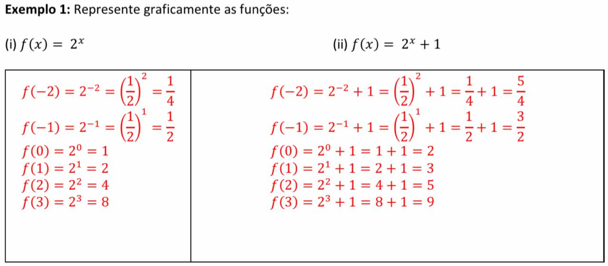
➟ Na função (i) f(x) = 2^x: quando x = -2 ➟ y = 0,25; quando x = -1 ➟ y = 0,5; quando x = 0 ➟ y = 1 e assim por diante como mostra na imagem acima... Então foram marcados os pontos x e y no gráfico e foi traçada uma linha vermelha juntando esses pontos. (Mesma coisa com a outra função, representada pelo traço de cor verde):
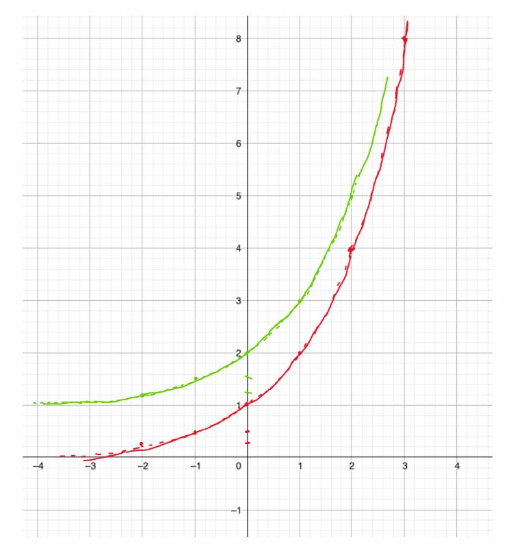
➟ Resolvemos também, esse exercício a seguir, fazendo o uso da função: f(x) = C . a^(kx); para representar o crescimento exponencial de uma cultura de bactérias:
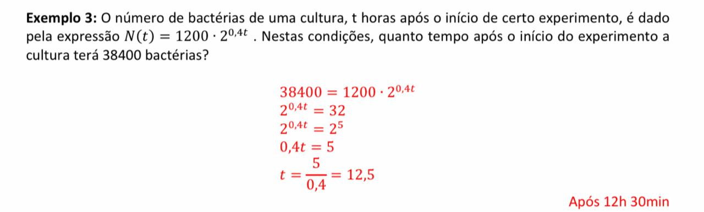
➟ Percebemos que a função exponencial tem várias aplicações, não só na matemática. Pesquisando, descobrimos que ela está presente em muitas áreas, como a lei de resfriamento na física e o decaimento radioativo na química, por exemplo. Além disso, a biologia e a geografia buscam, na função exponencial, explicar crescimentos ecológicos e sociológicos.
➟ Logaritmos:
Os logaritmos são usados como ferramenta importante para a resolução de
equações exponenciais. É muito útil quando não conseguimos igualar e
“cortar” as bases. Definição:
"O logaritmo de b na base a é o número x se, e somente se, a elevado a x for igual ao número b: 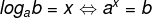"
a → base
b → logaritmando
x → logaritmo
➟ Exemplo: log2 32 (A qual expoente devemos elevar o 2 (base) para que resulte 32 (logaritmando)?); Resposta: 5 (2.2.2.2.2 = 32). Podemos solucionar os logaritmos simplesmente fatorando o logaritmando que nesse caso é o 32:
32|2
16|2
8|2
4|2
2|2
1
➟ R: 2^5 = 32
Alguns exemplos que fizemos na aula:
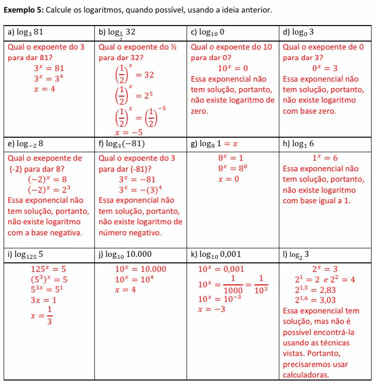
➟ Com a realização do exercício, chegamos em algumas conclusões: o logaritmo pode se transformar em uma equação exponencial; logaritmando deve ser b > 0; a base deve ser a > 0 e a ≠ 1;
➟ Consequências da definição:
⸰ Logaritmo de qualquer base (a), com logaritmando (b) igual a 1 será 0. Exemplo: log3 1 = 0, porque 3^0 = 1;
⸰ Quando a base e o logaritmando são iguais, o resultado do log é 1. Exemplo: log6 6 = 1, porque 6^1 = 6;
⸰ Quando a base e o logaritmando são iguais e o logaritmando está elevado a uma potência (n), o log vai ser o expoente que b está elevado. Exemplo: log3 3^5 = 5;
⸰ A potência de base (a) e expoente logab será igual a b, ou seja alogab = b;
⸰ Quando dois logaritmos com mesma base são iguais, os logaritmandos também serão iguais: loga b = loga c ⇔ b = c;
➟ Propriedades Logaritmicas:
⸰ Logaritmo de um produto: é a soma de seus logaritmos: Loga (b.c) = Loga b + loga c;
⸰ Logaritmo de um quociente: é a diferença dos logaritmos: Loga (b/c) = Loga b - Loga c;
⸰ Logaritmo de uma potência: é o produto dessa potência pelo logaritmo: Loga b^m = m . Loga b;
⸰ Mudança de base: para mudar a base é só usar a relação: logbc = logac/logab;
➟ Funções Logaritmicas:
⸰ Dado um número real a > 0; a ≠ 1 chamamos de função logarítmica de base a a função f de R*+ em R em que associa a cada x o número logax
➟ f(x) = loga x
⸰ O domínio é D(f) = (0, +∞) = ℝ∗+ e a imagem é Im(f) = ℝ.
⸰ As funções f(x) = logax e f(x) = a^x; são inversas uma da outra.
⸰ Sobre o gráfico, ele está à direita do eixo y, corta o eixo das abcissas no ponto (1, 0), a função é crescente se a > 1.
Exemplo:
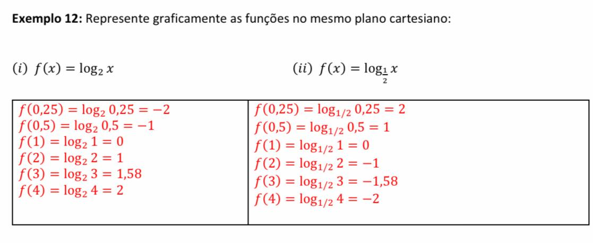 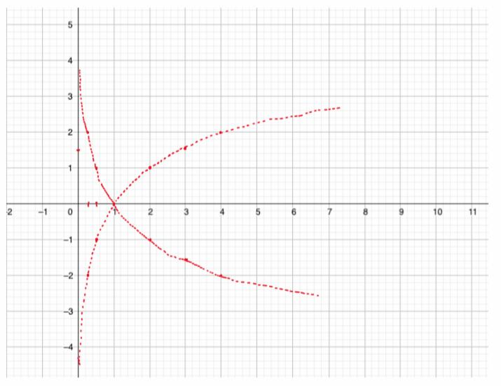
“A Matemática Financeira ou Matemática das Finanças é uma ciência que se preocupa em
analisar os fenômenos econômico-financeiros à luz dos métodos quantitativos, fornecendo modelos e
processos eficientes na solução de problemas relacionados à tomada de decisão de ordem pessoal,
empresarial e governamental” (FERREIRA, 2010).
➟ Sabemos que a matemática financeira é um tópico muito importante, pois está presente em diversas situações do nosso cotidiano. Por meio da porcentagem, do aumento, do desconto, do juros ou dos rendimentos, a matemática financeira traz ferramentas para lidar com situações-problemas que envolvem dinheiro no nosso dia-a-dia. É fundamental estudarmos matemática financeira, independentemente da carreira que iremos seguir, para estabelecermos nossas relações financeiras. O objetivo de educar-se financeiramente vai de encontro com o desejo de melhor qualidade de vida.
➟ Conceitos importantes que estudamos:
⸰ Capital Inicial, Principal ou Valor Presente
Valor inicial de um empréstimo/aplicação, sobre o qual irão incidir os juros.
Símbolos: C, P ou PV (Present Value)
⸰ Prazo
Tempo de duração do empréstimo/investimento. Pode ser medido em dias, meses,
trimestres, semestres, anos, etc.
Símbolo: n
⸰ Juro
Preço pago pelo aluguel/empréstimo, do capital. É também o
rendimento do dinheiro aplicado.
Símbolo: J
⸰ Taxa de Juros
Taxa percentual ou unitária do rendimento do capital ou pagamento pelo uso do capital, numa
unidade de tempo (ao dia, ao mês, ao ano,...)
Símbolo: i
Taxa percentual de juros: 5 %
Taxa unitária de juros: 0,05 (para obter é só dividir o percentual por 100)
⸰ Montante ou Valor Futuro
Valor total a ser pago ou recebido com a finalidade de quitar um empréstimo. É o valor final de
uma aplicação.
Símbolo: M, S ou FV (Future Value)
Fórmula:
M = P + J
⸰ Regime de Capitalização
Ato de adicionar juros ao capital.
Capitalização Simples ⇨ Juros Simples
Capitalização Composta ⇨ Juros Compostos
⸰ Capitalização Simples
É uma função com crescimento linear
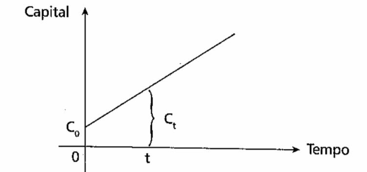
⸰ Capitalização Composta
É uma função com crescimento exponencial
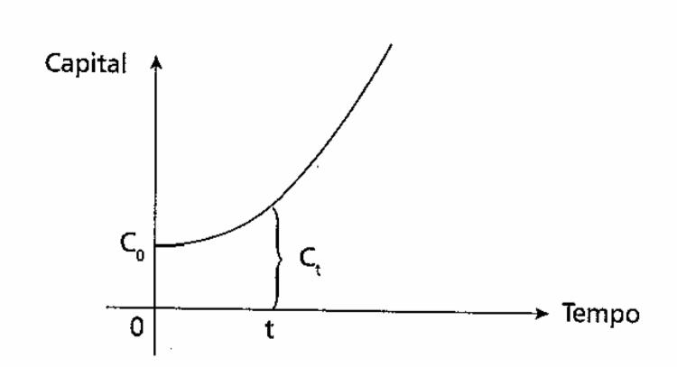
➟ Juros Simples
⸰ Juros simples é um acréscimo calculado sobre o valor inicial (capital) de um aplicação financeira;
⸰ Fórmula:
➟ J = C . i . n
Onde:
C: capital aplicado
i: taxa de juros
n: período que corresponde os juros
Logo, o montante dessa aplicação será:
M = C + J
M = C + C . i . n
M = C . (1 + i . n)
➟ Exemplos que fizemos em aula:
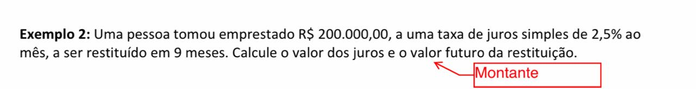
1. Ele pede para que encontremos os juros e o valor futuro (também chamado de montante).
⸰ O primeiro passo para resolvermos essa questão é anotar todos os valores que o enunciado nos dá:
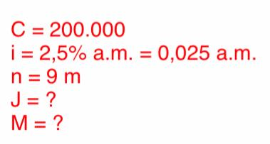
⸰ Para resolver, usaremos a fórumla dos Juros Simples, substituindo os valores; Logo em seguida, usaremos a fórmula do Montante usando o resultado do cálculo dos Juros Simples:
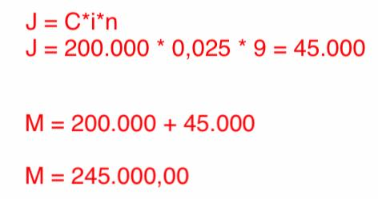 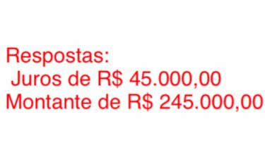
2. O exercício a seguir pede a duração do empréstimo, ou seja, o tempo. Começamos igual a outra questão, primeiro identificamos todos os valores do enunciado, após, aplicamos na fórmula dos Juros Simples isolando o n (prazo). Depois de descobrir o tempo, fazemos a regra de três pra descobrir os meses e dias equivalentes.
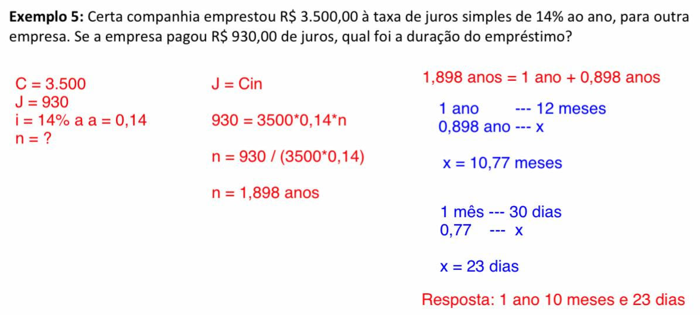
➟ Juros Compostos:
⸰ A diferença básica entre juros simples e juros compostos é a base de cálculo da taxa. Nos juros simples, a taxa é cobrada sobre o valor inicial. Nos juros compostos, a taxa é cobrada sobre o valor do último mês. Ou seja, nesse último caso, o valor cresce muito mais rápido. É o que se chama de juros sobre juros.
⸰ O conceito do Montante é o mesmo dos Juros Simples: M = J + C; Mas podemos reescrever dessa forma:
M = C(1 + i)^n
⸰ A expressão (1 + i)^n é chamada de fator de capitalização ou fator de acumulação de capital
para pagamento simples ou único.
⸰ Exemplos que resolvemos:
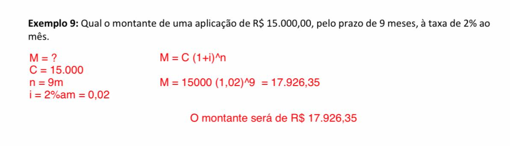 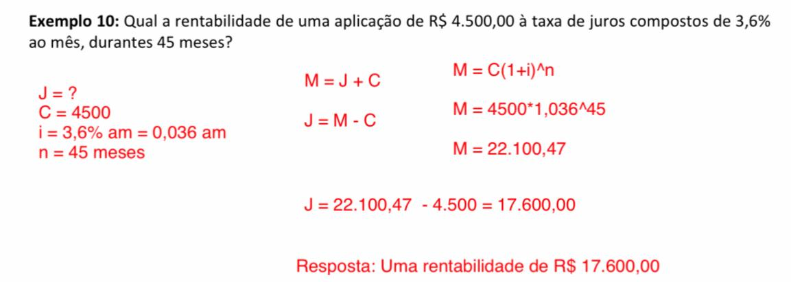
➟ Sobre o trabalho 2, acredito que eu poderia ter ido melhor, mas me confundi em algumas partes e alguns detalhes fizeram eu errar as questões... Mas estou satisfeita que não peguei recuperação. Em seguida vou deixar o link do trabalho e da minha resolução corrigida:
➟ Clique aqui para ver o trabalho proposto.
➟ Clique aqui para ver minha resolução.
Progressões Aritméticas e Geométricas
➟ Resumindo, progressões são sequências numéricas, sucessões de números que seguem um padrão específico. Progressão aritmética (PA) é uma sequência de números reais que a diferença entre um termo e seu antecedente, a partir do segundo, é uma constante. Progressão geométrica (PG) é uma sequência de números reais não nulos onde o quociente entre um termo e seu antecedente, a partir do segundo, é uma constante.
➟ Tem três formas pra estabelecer a lei de formação:
⸰ RECORRÊNCIA ⸰
>>>> São dadas duas regras: uma para identificar o primeiro termo (𝑎1) e outra para calcular cada termo (𝑎n) a partir de seu antecedente (𝑎n-1). Exemplo:
1. Escreva os 10 primeiros termos da sequência definida por {a1 = 2; an = a(n-1)+3, n ≥ 1:
⸰ Ou seja, a sequência começa pelo número 2 e os próximos números serão seu antecedente + 3...
Resposta: [2, 5, 8, 11, 14, 17, 20, 23, 26, 29]
⸰ TERMOS EM FUNÇÃO DE N ⸰
>>>> É estabelecida uma fórmula que expressa 𝑎n em função de 𝑛. Chamamos essa fórmula de Termo Geral. Exemplo:
2. Escreva os 5 primeiros termos da sequência infinita cujo termo geral é dado por 𝑎n = 3𝑛 + 1, 𝑛 ∈ ℕ∗.
𝑛 = 1 → 𝑎1 = 4
𝑛 = 2 → 𝑎2 = 7
𝑛 = 3 → 𝑎3 = 10
𝑛 = 4 → 𝑎4 = 13
𝑛 = 5 → 𝑎5 = 16
Resposta: (4, 7, 10, 13, 16, … )
⸰ PROPRIEDADE DOS TERMOS ⸰
>>>> É informada a propriedade que os termos da sequência devem apresentar. Exemplo:
3. Escrever os dez primeiros termos da sequência infinita formada pelos números primos
positivos em ordem crescente.
Resposta: (2, 3, 5, 7, 11, 13, 17, 19, 23, 29, … )
OBS: A sequência dos números primos não pode ser descrita por fórmula de recorrência, tampouco
existe termo geral que a define.
➟ Progressões Aritméticas:
➟ Sequência de números em que cada termo, a partir do
segundo, é a soma do anterior com uma constante dada 𝑟 .
Exemplos de PAs:
(i) (1, 3, 5, 7, 9, … ) → 𝑎1 = 1 𝑒 𝑟 = 2
(ii) (0, −2, −4, −6, −8, … ) → 𝑎1 = 0 𝑒 𝑟 = −2
(iii) (4, 4, 4, 4, 4, 4, … ) → 𝑎1 = 4 𝑒 𝑟 = 0
CLASSIFICAÇÃO
⸰ Crescente: cada termo é maior do que o anterior, ou seja, 𝑟 > 0.
⸰ Constantes: cada termo é igual ao anterior, então, 𝑟 = 0.
⸰ Decrescente: cada termo é menor que o anterior, logo, 0 > r.
FÓRMULA DO TERMO GERAL:
➟ Numa PA de razão r, o enésimo termo é dado por:
𝑎1
𝑎2 = 𝑎1 + 𝑟
𝑎3 = 𝑎2 + 𝑟 = 𝑎1 + 𝑟 + 𝑟 = 𝑎1 + 2𝑟
𝑎4 = 𝑎3 + 𝑟 = 𝑎1 + 2𝑟 + 𝑟 = 𝑎1 + 3𝑟
...
𝒂𝒏 = 𝒂𝟏 + (𝒏 − 𝟏)𝒓
a1 = primeiro termo
an = termo geral
n = número de termos
r = razão
Observações:
1) Às vezes é conveniente indicar o primeiro termo da PA por 𝑎0. Daí o termo geral fica 𝑎n = 𝑎0 + 𝑛𝑟.
2) Note que 𝑎7 = 𝑎3 + 4𝑟, pois para passar de 𝑎3 para 𝑎7 avançamos 4 posições. Da mesma forma,
𝑎5 = 𝑎11 − 6𝑟, pois para retroceder de 𝑎11 para 𝑎5 é preciso voltar 6 posições.
➟ Relação entre PA e Funções Afim:
⸰ Vimos que toda sequência é definida como uma função, se o domínio são os Números Naturais
(sem o zero) e o contradomínio são os Números Reais. Sendo a PA uma sequência em que a diferença
entre os termos vizinhos é constante, ela se assemelha ao crescimento linear de uma Função Afim.
⸰ Se considerarmos a PA ( 1, 3, 5, 7, 9, ...), podemos estabelecer uma representação gráfica em
que os pontos são do tipo (𝑛, 𝑎n), ou seja, (1, 𝑎1), (2, 𝑎2), …, No eixo x temos a posição dos termos da
PA. E no eixo y temos os termos da PA.
Assim: (1, 1), (2, 3), (3, 5), (4, 7), (5, 9), …
⸰ Podemos usar a fórmula do termo geral e
estabelecer uma relação entre os termos (𝑎n)
em função de sua posição (𝑛):
𝑎n = 𝑎1 + (𝑛 − 1)𝑟
𝑎n = 1 + (𝑛 − 1) ∗ 2
𝑎n= 1 + 2𝑛 − 2
𝑎n = 2𝑛 − 1
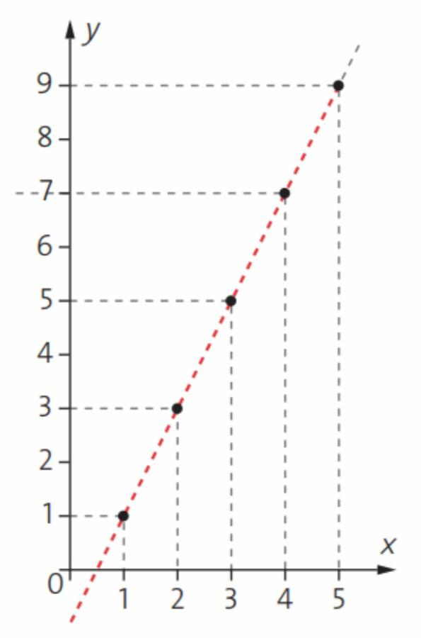
⸰ O gráfico dessa PA não pode ser uma
reta, como nas Funções Afim, pois seu domínio
são apenas os N*. O gráfico constitui de pontos
alinhados.
➟ Interpolação aritmética
⸰ Nas sequências finitas (a1, a2, …, n) os termos a1 e an são chamados extremos e outros chamados meios.
⸰ Interpolar, intercalar, inserir 𝑘 meios aritméticos entre dois números 𝒂 e 𝒃, significa obter uma
PA de extremos a e b com n = k + 2 termos. Para encontrar esses termos temos que encontrar a razão.
Exemplo: Interpolar 5 meios aritméticos entre 1 e 2. Resposta:
n = k + 2
n = 5 + 2 = 7
an = a1 + (n − 1)r
2 = 1 + (7 − 1)r
2 = 1 + 6r
1 = 6r
r = 1/6
A PA é: (1, 7/6, 8/6, 9/6, 10/6, 11/6, 2)
➟ Soma dos termos de uma PA finita
É possível somarmos todos os termos de uma PA finita sem somarmos um a um dos termos.
Para isso, usamos a fórmula:
𝑺𝒏 = (𝒂𝟏 + 𝒂𝒏)𝒏 /𝟐
➟ Progressões Geométricas
➟ Sequência de números em que cada termo, a partir do
segundo, é o produto do anterior por uma constante dada 𝑞.
Exemplos de PGs:
(i) (1, 2, 4, 8, 16, … ) → 𝑎1 = 1 𝑒 𝑞 = 2
(ii) (−1, −2, −4, −8, −16, … ) → 𝑎1 = −1 𝑒 𝑞 = 2
(iii) (4, 4, 4, 4, 4, 4, … ) → 𝑎1 = 4 𝑒 𝑞 = 1
CLASSIFICAÇÃO
⸰ Crescente: cada termo é maior do que o anterior.
⸰ PG com termos positivos: 𝑞 > 1.
⸰ PG com termos negativos: 1 > q > 0.
⸰ Constantes: cada termo é igual ao anterior.
⸰ PG com todos os termos nulos: 𝑎1 = 0 𝑒 𝑞 𝑞𝑢𝑎𝑙𝑞𝑢𝑒𝑟.
⸰ PG com termos iguais e não nulos: 𝑎 ≠ 0 𝑒 𝑞 = 1.
⸰ Decrescente: cada termo é menor que o anterior.
⸰ PG com termos positivos: 1 > q > 0.
⸰ PG com termos negativos: 𝑞 > 1.
⸰ Alternantes: cada termo tem sinal contrário ao do termo anterior. Isso ocorre quando 0 > q.
⸰ Estacionárias: Apenas o primeiro termo é diferente de zero: 𝑎# ≠ 0 𝑒 𝑞 = 0.
FÓRMULA DO TERMO GERAL
Numa PG de razão q, o enésimo termo é dado por:
𝑎1
𝑎2 = 𝑎1 ∙ 𝑞
𝑎3 = 𝑎2 ∙ 𝑞 = 𝑎1 ∙ 𝑞 ∙ 𝑞 = 𝑎1 ∙ 𝑞2
𝑎4 = 𝑎3 ∙ 𝑞 = 𝑎1 ∙ 𝑞2 ∙ 𝑞 = 𝑎1 ∙ q3
…
𝒂𝒏 = 𝒂𝟏 ∙ 𝒒^(n-1)
a1 = primeiro termo
an = termo geral
n = número de termos
r = razão
Observações:
1) Às vezes é conveniente indicar o primeiro termo da PG por 𝑎0. Daí o termo geral fica 𝑎n = 𝑎0𝑞n.
➟ Relação entre PG e Funções Exponenciais
Como pode ser visto, podemos pensar numa PG
como uma função exponencial que associa a
cada número Natural positivo 𝑛 um número Real
dado por 𝑎n = 𝑎1𝑞^(n-1).
𝑎(𝑥) = 𝑎𝑞^(x-1)
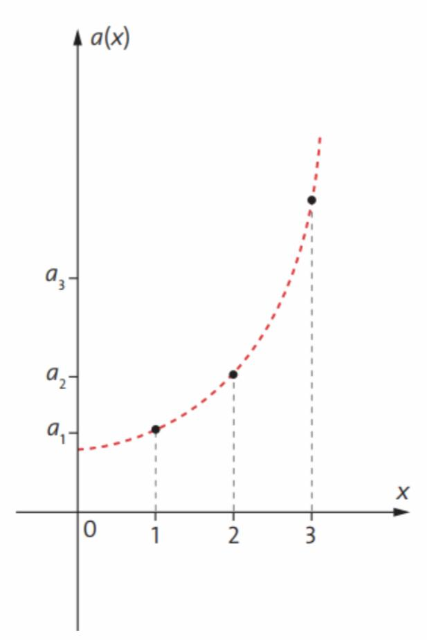
⸰ O gráfico dessa função é formado por uma
sequência de pontos que formam uma curva
exponencial. Por causa da restrição do seu
domínio, não podemos fazer o traço contínuo da
curva.
➟ Interpolação Geométrica
⸰Interpolar, intercalar, inserir 𝑘 meios geométricos entre dois números 𝒂 e 𝒃, significa obter
uma PG de extremos a e b com n = k + 2 termos. Para encontrar esses termos temos que encontrar a
razão.
Exemplo: Interpolar 8 meios geométricos entre 5 e 2560.
𝑛 = 𝑘 + 2
𝑛 = 8 + 2 = 10
𝑎n= 𝑎1𝑞^(n-1)
2560 = 5𝑞^9
𝑞^9 = 2560/5
𝑞^9 = 512
𝑞 = ^9√512 = 2
A PG é
(5, 10, 20, 40, 80, 160, 320, 640, 1280, 2560)
➟ Soma dos termos de uma PG finita
É possível somarmos todos os termos de uma PG finita sem somarmos um a um dos termos.
Para isso, usamos a fórmula abaixo, quando 𝑞 ≠ 1:
Sn = a1 . 1 - q^n / 1 - q
➟ Conjunto de técnicas e métodos de pesquisa que apresenta processos próprios para coletar, apresentar, analisar e interpretar dados a fim de possibilitar a tomada de decisões. Dividida em:
Estatística Descritiva:
Descreve, organiza e apresenta os dados através de tabelas, gráficos e medidas.
Estatística Inferencial:
Analisa os dados para a tomada de decisão. É alicerçada nos cálculos de probabilidade. Estabelece conclusões sobre um conjunto de elementos quando se observa somente uma parte deste.
➟ Definindo alguns conceitos:
⸰ População: Conjuntos de elementos para os quais se deseja investigar uma ou mais características.
Pode ser formada por pessoas, domicílios, peças de produção, cobaias, etc.
⸰ Amostra: subconjunto da população.
⸰ Uma pesquisa que envolve toda a população => Censo ou Recenseamento
>>>> Quando fazer Censo?
–População menor;
–Quando se exige o resultado exato => Censo Demográfico
⸰ Uma pesquisa com parte/subconjunto da população => Pesquisa por Amostragem
>>>> Quando fazer Amostragem?
–Economia de tempo;
–Economia de recurso financeiro;
–População muito grande ou infinita;
–Testes destrutivos;
➟ Média, Moda e Mediana:
medidas de tendência central utilizadas em estatística.
⸰ A média (Me) é calculada somando-se todos os valores de um conjunto de dados e dividindo-se pelo número de elementos deste conjunto.
Como a média é uma medida sensível aos valores da amostra, é mais adequada para situações em que os dados são distribuídos mais ou menos de forma uniforme, ou seja, valores sem grandes discrepâncias.
Fórmula:
Me = x1 + x2 + x3 + ... + xn / n
Me: média
x1, x2, x3,..., xn: valores dos dados
n: número de elementos do conjunto de dados
⸰ A Moda (Mo) representa o valor mais frequente de um conjunto de dados, sendo assim, para defini-la basta observar a frequência com que os valores aparecem. Um conjunto de dados é chamado de bimodal quando apresenta duas modas, ou seja, dois valores são mais frequentes.
⸰ A Mediana (Md) representa o valor central de um conjunto de dados. Para encontrar o valor da mediana é necessário colocar os valores em ordem crescente ou decrescente.
Quando o número elementos de um conjunto é par, a mediana é encontrada pela média dos dois valores centrais. Assim, esses valores são somados e divididos por dois.
➟ Gráficos:
➟ Gráfico em Colunas:

➟ Gráfico em Barra:
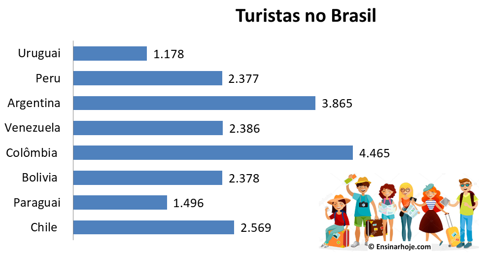
➟ Gráfico em Setores:
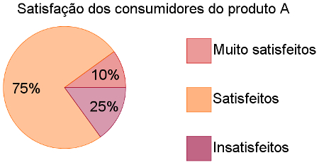
➟ Gráfico em Curvas:
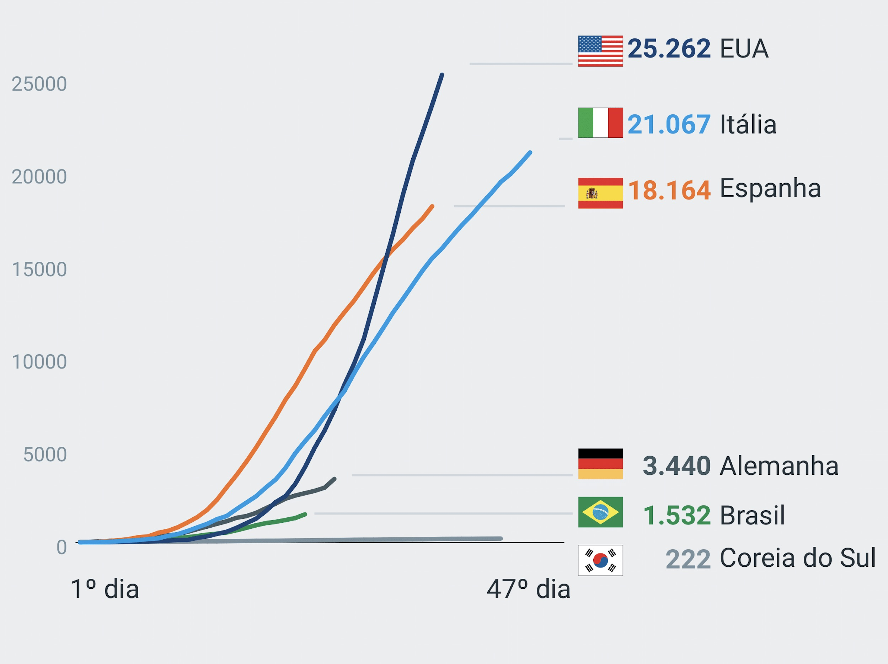
➟ Histograma:
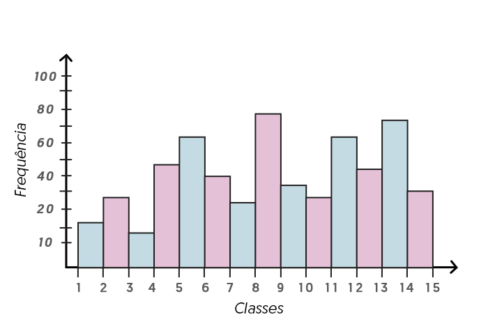
➟ Diferença dos gráficos com o histograma: enquanto nos gráficos de barra o eixo horizontal (eixo X) normalmente representa dados categóricos (qualitativos), o histograma traz nesse eixo dados numéricos (quantitativos)...
➟ Sobre o trabalho 3, compreendi bem o conteúdo e gostei de estuda-lo, porém, não consegui desenvolver a última questão pois era um pouco mais trabalhosa... Mas estou feliz de ter aprendido e conseguido realizar sem ajuda... Em seguida vou deixar o link do trabalho e da minha resolução corrigida:
➟ Clique aqui para ver o trabalho proposto.
➟ Clique aqui para ver minha resolução.
AUTOAVALIAÇÃO